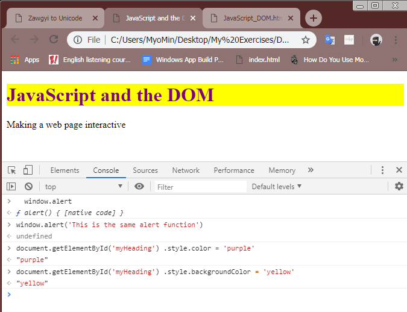
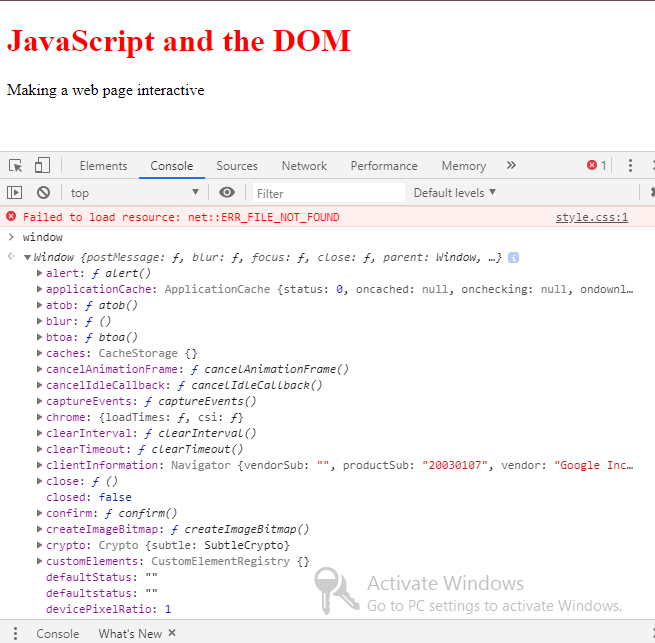
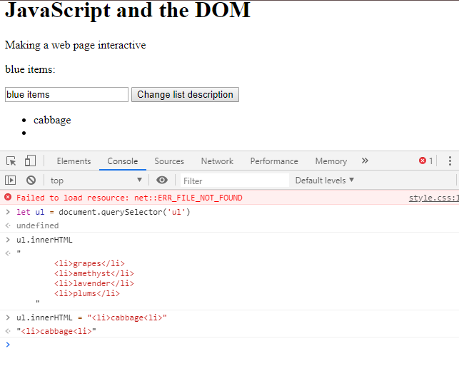
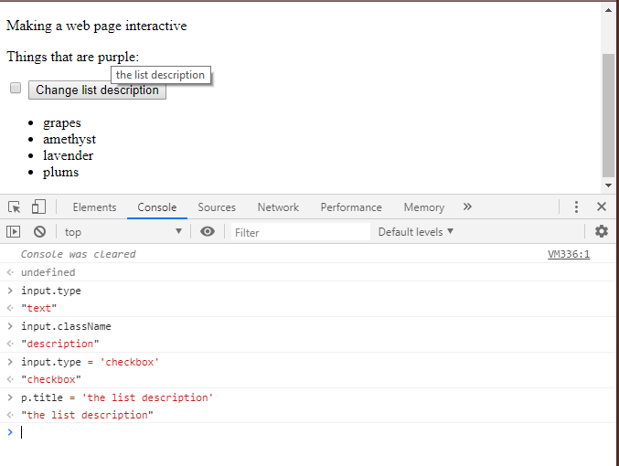

What You'll Learn
Welcome and Overview
javaScript ကစိတ်ဝင်စားစရာကောင်းတဲ့ language တစ်ခုဖြစ်ပြီးတော့ power web servers , desktop programs တွေတည်ဆောက်ဖို့ရန်, robot တွေကိုထိန်းချုပ်ရန်အတွက်အသုံးပြုနိုင်ပါတယ်။ဒါပေမယ့် javaScript တွေကို browser တွေမှာ 1995 နောက်ပိုင်းမှာမှစပြီးအသုံးပြုနိုင်တာပဲဖြစ်ပါတယ်။အခြား Users တွေဆီမှ Inputs တွေ mouse clicks လုပ်တဲ့အခါမှာအလုပ်လုပ်ပေးမယ့်ဟာတွေစတဲ့ responsive webpages တွေကိုတည်ဆောက်ဖို့အတွက်ကျွန်တော်တို့အသုံးပြုနိုင်ပါတယ်။languages တွေအများကြီးရှိတဲ့ထဲကမှ websites တွေအတွက်အသုံးဝင်မယ့်အရာတွေ ,interactive တွေ fun တွေကိုတည်ဆောက်ဖို့ရန်အတွက်JavaScript ကအရေးကြီးတဲ့အပိုင်းမှာပါဝင်နေတာပဲဖြစ်ပါတယ်။အခုတစ်ခါမှာတော့ javaScript power တွေကိုလက်တွေမှာအသုံးပြုပြီးတော့ webpages တွေကိုဘယ်လိုသယ်ဆောင်သလဲဆိုတာပဲဖြစ်ပါတယ်။ပထမအနေနဲ့ကျွန်တောတို့ javaScript တွေနဲ့တည်ဆောက်ထားတဲ့ webpages အချို့ကို example အနေနဲ့လေလာသွားမှာဖြစ်ပါတယ်။ Wikipedia ဆိုတဲ့ page ကတော့ static webpage တစ်ခုရဲ့ example တစ်ခုပဲဖြစ်ပါတယ်။အဲ့ဒီမှာ javaScript တွေမပါပါဘူး။interactivity တွေမပါဝင်ပါဘူး။page မှာပါတဲ့ text တွေ Links တွေကတော့ ပြီးပြည့်စုံနေတာပဲဖြစ်ပါတယ်။ဘာ့ကြောင့်လဲဆိုတော့ အဲ့တာတွေက textual information ရဲ့ paragraphs တွေဖြစ်နေလို့ပဲဖြစ်ပါတယ်။ဆိုလိုတာကတော့ ကျွန်တော်တို့စာအုပ်ထဲမှာစာတွေဖတ်နေရတဲ့ပုံစံမျိုးတွေဖြစ်နေလို့ပဲဖြစ်ပါတယ်။နောက်ထပ် interactivity လို့ခေါ်တဲ့ calculating page တစ်ခုကို ဒီမှာ ကြည့်နိုင်ပါတယ်။အဲ့ဒီ page မှာတော့စပြီးအလုပ်လုပ်တဲ့အခါမှာ bottom တွေကို click လုပ်တဲ့အခါမှာ response ပြုလုပ်နိုင်အောင်စွမ်းဆောင်ပေးနိုင်ပါတယ်။ နောက်ထပ်example တစ်ခုကတော့ google sheet ဖြစ်ပြီး web page ထဲမှာရှိတဲ့ full blow application ရဲ့ example တစ်ခုဖြစ်ပါတယ်။အဲ့'ဒီမှာဆိုရင်ကျွန်တော်တို့ cells ထဲမှာ Information တွေကိုရေးပြီးထည့်နိုင်ပါတယ်။right click option ကိုနှိပ်ပြီးတော့ formatting options အမျိုးမျိုးကိုတွေ့နိုင်မှာဖြစ်ပါတယ်။အခြား functionality တွေအတွက် navigate menus တွေဖြစ်တဲ့ sorting , row တွေထပ်ထည့်တာတွေကိုလည်းကျွန်တော်တို့လုပ်ဆောင်နိုင်ပါတယ်။အဲ့ဒီထဲမှာရှိတဲ့ interactivity တွေက javaSctript တွေနဲ့လုပ်ဆောင်ထားတာပဲဖြစ်ပါတယ်။ဥပမာ click ပြုလုပ်တာတွေ changing ပြုလုပ်တာတွေပဲဖြစ်ပါတယ်။ဒီသင်ခန်းစာမှာတော့ကျွန်တော်တို့ရဲ့ static page တွေကို javaScript တွေနဲ့ဘယ်လို interactive ပြုလုပ်မယ်။three basic action ထဲမှာ interactivity တွေကိုဘယ်လို break လုပ်မယ်ဆိုတာတွေကိုလေ့လာရမှာဖြစ်ပါတယ်။ element တွေကို manipulating ပြုလုပ်တာတွေ, page ပေါ်မှာ element တွေကို selecting ပြုလုပ်တာတွေယ user actions တွေအတွက် listening ပြုလုပ်တာတွေစတာတွေပဲဖြစ်ပါတယ်။web page ပေါ်မှာ elements တွေအများကြီးရှိပါတယ်။ဥပမာ calculator app မှာဆိုရင် number keys တွေအများကြီးရှိပြီးတော့ တစ်ခုစီကို element နဲ့ပိုင်းခြားထားတာပဲဖြစ်ပါတယ်။
Thinking Globally
လေယာဉ်တစ်စီးမှာရှိတဲ့ cockpit တစ်ခုမှာ switch အများအပြားပါရှိပြီးတော့အဲ့တာနဲ့ လေယာဉ်ရဲ့ position တွေကို captain တွေကထိန်းသိမ်းနိုင်ပါတယ်။ နီးစပ်ရာ base တွေနဲ့ချိတ်ဆက်ပြီးတော့အပြည့်အဝထိန်းချုပ်နိုင်ပါတယ်။ JavaScript ဟာလည်း global environment တစ်ခုဖြစ်ပြီးတော့ cockpit တစ်ခုလိုပဲလုပ်ဆောင်နိုင်ပါတယ်။ JavaScript objects တွေ functions တွေနဲ့ browser တွေထဲမှာ code တွေကိုခွင့်ပြုပေးနိုင်အောင်ပြုလုပ်ပြီး web pages တွေကို manipulate ပြုလုပ်ပေးတာပဲဖြစ်ပါတယ်။ဥပမာအနေနဲ့ကျွန်တော်တို့က page တစ်ခုရေးပြီးတော့ browser မှာrun ပေးရပါမယ်။အဲ့ဒီနောက် browser မှာ console tag ဖွင့်ပြီးတော့ window ဆိုတာကိုရိုက်ထည့်နိုင်ပါတယ်။အဲ့ဒီထဲမှာ browser ကို javaScript နဲ့ထိန်းချုပ်နိုင်တဲ့အရာတွေကိုဖော်ပြပေးပါလိမ့်မယ်။ အဲ့ဒီ globals တွေအားလုံးဟာ window object တွေပေါ်မှာရှိတဲ့ properties တွေပဲဖြစ်ပါတယ်။ ဥပမာထဲမှာတော့ကျွန်တော်တို့ console ထဲကနေ heading ရဲ့ color တွေ background color တွေကိုပြောင်းနိုင်ပါတယ်။ elements တွေကို select လုပ်ချင်တဲ့အခါမှာတော့ကျွန်တော်တို့က id ကိုသတ်မှတ်ခဲ့ပြီး document.getElementById နဲ့ခေါ်ပြီးအသုံးပြုနိုင်ပါတယ်။mouse click ပြုလုပ်တဲ့အချိန်မှာအလုပ်လုပ်ဖို့အတွက်ကျွန်တော်တို့က addEventListener method ကိုအသုံးပြုပေးရပါမယ်။ 
What is DOM?
Document ကတော့ Html တွေ webpage content တွေကိုကိုယ်စားပြုတဲ့ global object တစ်ခုပဲဖြစ်ပါတယ်။နောက်ပြီး javaScript တွေနဲ့webpage ရဲ့မတူညီတဲ့အပိုင်းတွေကို document တွေနဲ့ interactive ပြုလုပ်ပြီးပြောင်းလဲနိုင်ပါတယ်။DOM ရဲ့အရှည်ကတော့ Document Object Model ပဲဖြစ်ပါတယ်။DOM က webpage ကိုကိုယ်စားပြုပြီးတော့ javaScript တွေကိုအသုံးပြုနိုင်ပါတယ်။ DOM က webpage ရဲ့map တစ်ခုဖြစ်ပြီးတော့ javaScript တွေကိုအသုံးပြုနိုင်ပါတယ်။ DOM တွေက webpage တွေကို tree-like structure တစ်ခုလိုပဲကိုယ်စားပြုပါတယ်။Html မှာ ul tag ထဲမှာရှိတဲ့ li tag တွေလိုပါပဲ document element သို့မဟုတ် node တွေကလည်း tree တစ်ခုရဲ့ root node တွေပဲဖြစ်ပါတယ်။သစ်ပင်တစ်ပင်ရဲ့အရွက်တွေက heading element သို့မဟုတ် list items nodes တွေနဲ့တူညီပါတယ်။အဲ့ဒီ leave တွေက Html page ရဲ့အနက်ဆုံး nested tags တွေကိုကိုယ်စားပြုပါတယ်။
Recap
ဒီသင်ခန်းစာမှာတော့ကျွန်တော်တို့ browser environment ထဲမှာရှိတဲ့ global scope တွေအကြောင်းကိုလေ့လာရမှာပဲဖြစ်ပါတယ်။ပြီးတော့ မည်သည့် javaScript တွေမှမဖတ်ခင်မှာတော့ global variable တွေအများအပြားရှိပါတယ်။main global variable တွေက document object တွေနဲ့အလုပ်လုပ်ပါလိမ့်မယ်။အခြား global variables တွေကတော့ window object ရဲ့ property တွေပဲဖြစ်ပါတယ်။ element တွေကို javaScript တွေနဲ့ထိမ်းချုပ်တဲ့အခါမှာအဆင့်နှစ်ဆင့်ရှိပါတယ်။ပထမတစ်ဆင့်ကတော့ element ကို select ပြုလုပ်ပြီးအဲ့တာကို read လုပ်နိုင်သလား manipulate ပြုလုပ်နိုင်သလားဆိုတာကိုကြည့်ရပါမယ်။User တွေရဲ့အလုပ်လုပ်မှုအပေါ်မှာ တုံ့ပြန်မှုရှိမရှိကြည့်ရပါမယ်။ဥပမာကျွန်တော်တို့ email ကိုထည့်တယ်ဆိုရင်မှားနေတယ်ဆိုရင် အနီရောင်နဲ့ error message တွေကို browser ကတုန့်ပြန်ပေးမှာဖြစ်ပါတယ်။ 
Select Element By ID
ပြီးခဲ့တဲ့သင်ခန်းစာမှာတုန်းကကျွန်တော်တို့ element တွေကို select ပြုလုပ်ဖို့ document.getElementById ကိုအသုံးပြုပြီး select ပြုလုပ်ခဲ့ကြပါတယ်။Selection ဆိုတာကတော့ browser အတွက် element တွေကိုခွဲခြားသတ်မှတ်နိုင်ဖို့အတွက်နည်းလမ်းတစ်ခုပဲဖြစ်ပါတယ်။document ဆိုတာကတော့လက်ရှိ page ရဲ့ global variable တွေကိုကိုယ်စားပြုခြင်းပဲဖြစ်ပါတယ်။နောက်ြ့ပီး getElementById ကတော့ document object ကိုထိန်းချုပ်ဖို့အတွက်အသုံးပြုပါတယ်။အဲ့ဒီထဲမှာရှိတဲ့ value ကတော့ကျွန်တော်တို့သတ်မှတ်ချင်တဲ့ element ရဲ့ id ကိုspecified ပြုလုပ်ပေးတာပဲဖြစ်ပါတယ်။ ကျွန်တော်တို့ဥပမာထဲမှာတော့ textBox ကကျွန်တော်တို့ရိုက်ထည့်လိုက်တဲ့color value ကိုယူပြီး heading ရဲ့ color style ကိုသွားပြီးသတ်မှတ်တာပဲဖြစ်ပါတယ်။
const myHeading = document.getElementById('myHeading');
const myButton = document.getElementById('myButton');
const myText = document.getElementById('myTextInput');
myButton.addEventListener('click', () => {
myHeading.style.color = myTextInput.value;
});
Select All Element of Particular Type
ကျွန်တော်တို့က ID တွေအသုံးမပြုပဲနဲ့ elements တွေအများကြီးကို select ပြုလုပ်ချင်တယ်ဆိုရင် element ရဲ့ tag name ကိုအသုံးပြုရပါမယ်။document.getElementsByTagName() ဆိုတာဖြစ်ပြီးအဲ့တာကအလွန်ကို ရိုးရှင်းပါတယ်။နောက်ထပ်ကျွန်တော်တို့ သတိပြုရမှာတစ်ခုကတော့အခု method မှာ Element မှာ s ပါတာပဲဖြစ်ပါတယ်။get element by id က single element တွေကိုပဲ return ပြန်ပေးနိုင်ပြီး direct access ပြုလုပ်ပေးနိုင်ပါတယ်။ get element by tage ကတော့ elements တွေရဲ့ collection တွေကို return ပြန်ပေးမှာပဲဖြစ်ပါတယ်။collection တွေကတော့ array တွေနဲ့တူပြီးအကုန်လုံးကို access ပြုလုပ်နိုင်ဖို့အတွက် collection တစ်ခုလုံးပေါ်မှာ loop ပြုလုပ်ပြီး သို့မဟုတ် index ပြုလုပ်ပြီး element တွေကိုလက်ခံပေးပါတယ်။ဥပမာထဲမှာကျွန်တော်တို့ unorder list တစ်ခုကိုcolor ပြောင်းပေးထားတာကိုကြည့်နိုင်ပါတယ်။
const myList = document.getElementsByTagName('li');
for (let i = 0; i < myList.length; i += 1) {
myList[i].style.color = 'purple';
}
Select Element Same Class Name
ကျွန်တော်တို့က class တွေကိုတော့ CSS ထဲက style တွေကိုပြုပြင်ဖို့အတွက်မကြာခနအသုံးပြုကြပါတယ်။ဒီမှာလည်းပဲ elements တွေကို select ပြုလုပ်ဖို့ document.getelementsbyclassname ဆိုတာကိုအသုံးပြုနိုင်ပါတယ်။အဲ့လိုအသုံးပြုဖို့အတွက်ကျွန်တော်တို့က html document ထဲမှာ class တွေကိုကြေငြာခဲ့ရမှာပဲဖြစ်ပါတယ်။ဥပမာထဲမှာတော့ list items တွေထဲမှာမှတစ်ချို့ကို class သတ်မှတ်ပေးပြီးဥပမာရေးပြထားတာပဲဖြစ်ပါတယ်။
const myList = document.getElementsByTagName('li');
for (let i = 0; i < myList.length; i += 1) {
myList[i].style.color = 'purple';
}
const errorNotPurple = document.getElementsByClassName('error-not-purple');
for (let i = 0; i < myList.length; i += 1) {
errorNotPurple[i].style.color = 'red';
}
Use Queries To Select Elements
နောက်ဆုံးကျန်တဲ့ selector နှစ်ခုကတော့ query selector နဲ့ query selector all ဆိုတာတွေပဲဖြစ်ပါတယ်။အဲ့ဒီနှစ်ခုက flexible ပိုဖြစ်ပြီးတော့ IDs ,classes, tag names တွေနဲ့အဲ့ထက်ပိုတာတွေကိုလက်ခံန်ုင်ပါလိမ့်မယ်။နှစ်ခုရဲ့ခြားနားချက်ကတော့ querySelector ကပထမဆုံးကိုက်ညီတဲ့ element ကိုပဲ return ပြန်ပေးပါလိမ့်မယ်။querySelectorAll ကတော့ selector နဲ့ကိုက်ညီတဲ့ elements တွေအားလုံးကို return ပြန်ပေးပါလိမ့်မယ်။ကျွန်တော်တို့ဥပမာထဲမှာတော့ list item တွေကိုပြောင်းပြထားတာပဲဖြစ်ပါတယ်။အဲ့တာတွေကိုလေ့လာပြီးတဲ့အခါမှာ selection methods တွေကအလွန် powerful ဖြစ်ပြီး flexible ဖြစ်တယ်ဆိုတာတွေကိုမြင်တွေ့ရမှာပဲဖြစ်ပါတယ်။ကျွန်တော်တို့ Method တွေအကုန်လုံးကိုအသေးစိတ်ပါဖော်ပြပေးတဲ့ MDN (Mozilla Developer Network ) မှာရှာပြီးကြည့်နိုင်ပါတယ်။နောက်ပြီးcaniuse.com မှာလည်းကျွန်တော်တို့ရှာပြီဘယ် browser တွေကိုဘယ်လိုထောက်ပံ့ပေးတယ်ဆိုတာကိုလေ့လာနိုင်ပါတယ်။
const myList = document.getElementsByTagName('li');
for (let i = 0; i < myList.length; i += 1) {
myList[i].style.color = 'purple';
}
const errorNotPurple = document.querySelectorAll('.error-not-purple');
for (let i = 0; i < errorNotPurple.length; i += 1) {
errorNotPurple[i].style.color = 'red';
}
const evens = document.querySelectorAll('li:nth-child(odd)');
for (let i = 0; i < evens.length; i += 1) {
evens[i].style.backgroundColor = 'lightgray';
}
Get & Set Text with textContent & innerHTML
ကျွန်တော်တို့ဒီတစ်ခါမှာတော့ text တွေကိုဘယ်လို change မယ် read လုပ်မယ်ဆိုတာတွေကိုစပြီးလေ့လာသွားမှာဖြစ်ပါတယ်။အဲ့ဒီထဲမှာတွေ DOM element properties နှစ်ခုဖြစ်တဲ့ textContent နဲ့ innerHTML ဆိုတဲ့နှစ်ခုပဲဖြစ်ပါတယ်။အဲ့တာတွေတစ်ခုစီက DOM ကိုချည်းကပ်ဖို့သူတို့မှာကိုယ်ပိုင်နည်းလမ်းတစ်ခုစီရှိပါတယ်။textContent တွေကတော့ read လုပ်ဖို့အတွက်သို့မဟုတ် elements တွေရဲ့ text values တွေကိုသတ်မှတ်ဖို့အတွက်အသုံးပြုနိုင်ပါတယ်။ဥပမာထဲမှာတော့ကျွန်တော်တို့ list title ကိုပြောင်းလဲနိုင်တာကိုရေးပြထားတာပဲဖြစ်ပါတယ်။ အဲ့တာကြောင့်ပထမဆုံးကျွန်တော်တို့က paragraph တွေ text input တွေနဲ့ button တွေကို const variables ထဲမှာ assign လုပ်ဖို့အတွက် select လုပ်ပေးရပါမယ်။button ကို click လုပ်တဲ့အချိန်မှာပြောင်းစေချင်တာဖြစ်လို့ addEventListener ကိုသုံးပြီးထည့်ပေးရပါတယ်။အဲ့ဒီထဲမှာမှ textContent ထဲကို inputBox က text ကိုထည့်ပြီးပြောင်းပေးမှာဖြစ်ပါတယ်။innerHTML ကိုလည်း textContent နေရာမှာလဲပြီးအသုံးပြုနိုင်ပါတယ်။သို့သော်လည်း innerHTML က text တွေကိုပိုပြီး handling ပြုလုပ်နိုင်ပါတယ်။နောက်ပြီး၎င်းရဲ့ name က suggests ပြုလုပ်ပေးပါတယ်။ကျွန်တော်တို့ web page ပေါ်မှာလည်း element တွေကိုပြောင်းလဲနိုင်ပါတယ် သို့မဟုတ် read လုပ်နိုင်ပါတယ်။ကျွန်တော်တို့တွေက opening နဲ့ closing tag ကြားမှာရှိတဲ့အရာတိုင်းကို read လုပ်နိုင် replace လုပ်နိုင်ပါတယ်။ပုံထဲမှာတော့ကျွန်တော်တို့ ul tag ထဲမှာရှိတဲ့ li tag တွေကို console ကနေအစားထိုးပြထားတာပဲဖြစ်ပါတယ်။အဲ့ဒီအခါမှာတော့ကျွန်တော်တို့က innerHTML ကိုသုံးပြထားပါတယ်။
const input = document.querySelector('input');
const p = document.querySelector('p.description');
const button = document.querySelector('button');
button.addEventListener('click', () => {
p.textContent = input.value + ':';
})

Changing Element Attributes
Attributes ဆိုတာကတော့ element object တစ်ခုရဲ့ properties လိုပါပဲ form ပေါ်မှာတည်ရှိတဲ့ action attributes တွေသို့မဟုတ် link ပေါ်မှာတည်ရှိတဲ့ href attribute တွေလိုမျိုးပဲဖြစ်ပါတယ်။ class တွေကတော့ attributes တွေရဲ့ exception တွေပဲဖြစ်ပါတယ်။class တွေကိုရရှိဖို့အတွက်ကျွန်တော်တို့တွေ
class name property တွေကိုအသုံးပြုဖို့လိုအပ်ပါလိမ့်မယ်။javaScript file ထဲကနေကျွန်တော်တို့တွေက attributes တွေကိုပြောင်းလဲနိုင်သလိုထပ်ထည့်ပေးလို့လည်းရပါတယ်။ပုံထဲမှာတော့page ပေါ်မှာ console tag ထဲကနေ attributes တွေကိုပြောင်းပြထားပြီးထပ်ထည့်ပေးထားပါတယ်။input.type
ဆိုတာနဲ့ကျွန်တော်တို့ attribute ကိုပြောင်းပြထားတာဖြစ်ပြီး p.title ကတော့ paragraph ထဲမှာ title attribute ကိုထပ်ထည့်ပြထားတာပဲဖြစ်ပါတယ်။ element တစ်ခုရဲ့ class ကို get သို့မဟုတ် set ပြုလုပ်ချင်တယ်ဆိုရင် class property တွေကအလုပ်လုပ်မှာမဟုတ်ပါဘူး။အဲ့တာကြောင့်
className ကိုပဲအစားအသုံးပြုပါတယ်။

Styling Elements
Inline styles တွေကို style property တွေနဲ့ element ပေါ်မှာသတ်မှတ်နိုင်ပါတယ်။ style object ပေါ်မှာရှိတဲ့ properties တွေကကျွန်တော်တို့သတ်မှတ်လိုက်တဲ့များစွာသော CSS properties တွေကိုကိုယ်စားပြုပါတယ်။ အဲ့ဒီ properties တွေက elements တွေရဲ့ inline styles တွေကိုပဲရည်ညွန်းပါတယ်။ ကျွန်တော်တို့ console ထဲကနေသတ်မှတ်ပြီးသား element တစ်ခုကို style ဆိုတဲ့ keyword နဲ့တွဲပြီး run ရင် styles properties တွေပေါ်လာမှာပဲဖြစ်ပါတယ်။ဥပမာထဲမှာတော့ကျွန်တော်တို့ JavaScript တွေနဲ့ setting style တွေကိုအသုံးပြုပြီးတော့ element တွေကို hide or unhide ပြုလုပ်ပြထားပါတယ်။ အဲ့လိုပြုလုပ်ဖို့အတွက်ကျွန်တော်တို့က addEventListener ထဲမှာ display ကို none တွေ block တွေပေးထားခဲ့ရတာပဲဖြစ်ပါတယ်။
const toggleList = document.getElementById('toggleList');
const listDiv = document.querySelector('.list');
const input = document.querySelector('input.description');
const p = document.querySelector('p.description');
const button = document.querySelector('button.description');
toggleList.addEventListener('click', () => {
if (listDiv.style.display == 'none') {
listDiv.style.display = 'block';
toggleList.textContent = 'Hide list';
} else {
listDiv.style.display = 'none';
toggleList.textContent = 'Show list';
}
});
button.addEventListener('click', () => {
p.textContent = input.value + ':';
});
See Examp Page
Creating New DOM Elements
ကျွန်တော်တို့ဟာ example page တွေအများကြီးပေါ်မှာ javaScript တွေနဲ့ element တွေအတွက်အများကြီးပြောင်းလဲမှုတွေကိုလေ့လာခဲ့ပြီးပါပြီ။ဒီတစ်ခါမှာတော့ကျွန်တော်တို့ element အသစ်တွေကိုတည်ဆောက်ဖို့နောက်ထပ် Level တစ်ခုကိုဆက်ပြီးလေ့လာသွားမှာဖြစ်ပါတယ်။JavaScript ထဲမှာကျွန်တော်တို့ element အသစ်ကိုတည်ဆောက်ချင်တယ်ဆိုရင်တော့ document.createElement ဆိုတာနဲ့တည်ဆောက်ပေးရမှာပဲဖြစ်ပါတယ်။ပြီးတော့ html element ရဲ့ name ကိုယူပြီးstring တစ်ခုအဖြစ်တည်ဆောက်ပေးရမှာဖြစ်ပါတယ်။ကျွန်တော်တို့ူဥပမာနဲ့ဖော်ပြသွားမှာဖြစ်ပါတယ်။ပထမကျွန်တော်တို့က input item တစ်ခုနဲ့ buttom တစ်ခုရှိရပါမယ်။အဲ့ဒီထဲကနေမှ div tag ထဲကိုကျွန်တော်တို့ element တွေ create ပြုလုပ်ပေးမှာဖြစ်ပါတယ်။နှစ်ခုစလုံးကို မတူညီတဲ့ class တွေဖြစ်အောင် addItemInput နဲ့ addItemButton ဆိုပြီးပေးထားပါတယ်။နောက်ြပ်ီး အခုတည်ဆောက်ခဲ့တဲ့ variables နှစ်ခုကိုjs file ထဲမှာသွားပြီးကြေငြာရပါမယ်။document.querySelector တွေနဲ့ကြေငြာပြထားပါတယ်။အဲ့ဒီနောက်မှာတော့ကျွန်တော်တို့ click event Listener တွေကိုထပ်ပြီးထည့်နိုင်ပါတယ်။အဲ့ဒီထဲမှာတော့ function တွေပါမှာဖြစ်ပြီး element ကိုတည်ဆောက်ပေးမှာဖြစ်ပါတယ်။ကျွန်တော်တို့က li element ကိုထပ်ထည့်မှာဖြစ်လို့ document.createElement('li')ဆိုတာကိုသုံးပြီးထည့်ပေးရပါတယ်။element ကိုတည်ဆောက်ပြီးတဲ့အခါမှာတော့အဲ့ဒီထဲမှာ text ကိုထည့်ဖို့အတွက်ကျွန်တော်တို့က textContent နဲ့ထည့်ပေးရပါမယ်။အဲ့ဒီ value ကိုတော့ကျွန်တော်တို့က text input ကနေယူမှာဖြစ်ပါတယ်။နောက်ထပ်ကျွန်တော်တို့က DOM ထည့်ကိုထည့်ဖို့လိုအပ်ပါသေးတယ်။နောက်ထပ်သင်ခန်းစာမှာ DOM ထဲကိုထည့်တဲ့နည်းတွေကိုလေ့လာသွားမှာဖြစ်ပါတယ်။
const toggleList = document.getElementById('toggleList');
const listDiv = document.querySelector('.list');
const descriptionInput = document.querySelector('input.description');
const descriptionP = document.querySelector('p.description');
const descriptionButton = document.querySelector('button.description');
const addItemInput = document.querySelector('input.addItemInput');
const addItemButton = document.querySelector('button.addItemButton');
toggleList.addEventListener('click', () => {
if (listDiv.style.display == 'none') {
listDiv.style.display = 'block';
toggleList.textContent = 'Hide list';
} else {
listDiv.style.display = 'none';
toggleList.textContent = 'Show list';
}
});
descriptionButton.addEventListener('click', () => {
descriptionP.innerHTML = descriptionInput.value + ':';
});
addItemButton.addEventListener('click', () => {
let li = document.createElement('li');
li.textContent = addItemInput.value;
});
See Examp Page
Appending Nodes
ပြီးခဲ့တဲ့သင်ခန်းစာမှာကျွန်တော်တို့ javaScript တွေနဲ့ elements တွေကိုဘယ်လိုဖန်တီးမယ်ဆိုတာကိုလေ့လာခဲ့ပြီးဖြစ်ပါတယ်။ဒါပေမယ့် javaScript တွေက ကျွန်တော်တို့ DOM ထဲမှာထည့်လိုက်တဲ့အချိန်ထိထွက်ပေါ်လာမှာမဟုတ်ပါဘူး။DOMNode တွေသို့မဟုတ် new element တွေကိုထားဖို့အတွက်ကျွန်တော်တို့က tree တွေကိုအသုံးပြုရပါလိမ့်မယ်။ရှိပြီးသား node ကို selecting ပြုလုပ်ပြီး node အသစ်ကို child အဖြစ်သတ်မှတ်ပြီးထည့်နိုင်ပါတယ်။DOM ပြီးမြောက်ဖို့ရန် node တွေကို appending ပြုလုပ်ဖို့အတွက်ကျွန်တော်တို့တွေက appendChild method ကိုအသုံးပြုပါတယ်။parent element ပေါ်မှာ appendChild ကိုခေါ်ပြီးတော့ argument တစ်ခုအဖြစ်ကျွန်တော်တို့ရဲ့ childElement ကို pass လုပ်ပါတယ်။ Element နဲ့ node ရဲ့ကြားမှာရှိတဲ့ခြားနားချက်ကဘာလဲ? element တွေက plain HTML ဖြစ်နေတဲ့အခါမှာ node က DOM ရဲ့အဖွဲ့ဝင်ဖြစ်ပါတယ်။ဥပမာထဲမှာတော့ကျွန်တော်တို့ ul tag ထဲမှာရှိတဲ့li list ကို append ပြုလုပ်ပေးမှာပဲဖြစ်ပါတယ်။ ပထမကျွန်တော်တို့ parent element ကို select ပြုလုပ်ပေးမှာဖြစ်ပါတယ်။အဲ့တာကြောင့်ကျွန်တေ်ာတို့ li variable နဲ့ ul variable ကိုကြေငြာပေးထားရမှာဖြစ်ပါတယ်။ul မှာတော့ကျွန်တေ်ာတို့ get element by tag name နဲ့ကြေငြာပေးထားပါတယ်။ဘာ့ကြောင့်လဲဆိုတော့ အဲ့ဒီ Method က collection တွေကို array တွေလိုပဲ return ပြန်ပေးလို့ပဲဖြစ်ပါတယ်။ပြီးတော့ကျွန်တော်တို့ရဲ့ page ထဲမှာ ul list တစ်ခုထဲပဲရှိလို့ဖြစ်ပြီး collection တွေက item တစ်ခုကိုပဲချုပ်ကိုင်ထားမှာဖြစ်ပြီးကျွန်တော်တို့တွေက 0 မှာပဲ access ပြုလုပ်နိုင်ပါတယ်။အခုကျွန်တော်တို့က appendChild method နဲ့ append ပြုလုပ်နိုင်ပြီဖြစ်ပါတယ်။ကျွန်တော်တို့ input ထဲမှာထည့်ထားတဲ့ text တွေက li တစ်ခုထည့်ပြီးတိုင်း clean မလုပ်ပဲကျန်ရှိနေမှာဖြစ်ပါတယ်။အဲ့တာကြောင့်ကျွန်တော်တို့က auto clear လုပ်ဖို့အတွက် value ထဲမှာ empty string တစ်ခုကိုထည့်ပေးခဲ့ရမှာပဲဖြစ်ပါတယ်။
const toggleList = document.getElementById('toggleList');
const listDiv = document.querySelector('.list');
const descriptionInput = document.querySelector('input.description');
const descriptionP = document.querySelector('p.description');
const descriptionButton = document.querySelector('button.description');
const addItemInput = document.querySelector('input.addItemInput');
const addItemButton = document.querySelector('button.addItemButton');
toggleList.addEventListener('click', () => {
if (listDiv.style.display == 'none') {
listDiv.style.display = 'block';
toggleList.textContent = 'Hide list';
} else {
listDiv.style.display = 'none';
toggleList.textContent = 'Show list';
}
});
descriptionButton.addEventListener('click', () => {
descriptionP.innerHTML = descriptionInput.value + ':';
descriptionInput.value = '';
});
addItemButton.addEventListener('click', () => {
let ul = document.getElementsByTagName('ul')[0];
let li = document.createElement('li');
li.textContent = addItemInput.value;
ul.appendChild(li);
addItemInput.value = '';
});
Removing Nodes
ကျွန်တော်တို့ elements တွေကို selecting ပြုလုပ်တာတွေ manipulating ပြုလုပ်တာတွေကိုလေ့လာခဲ့ပြီးဖြစ်ပါတယ်။အခုတစ်ခါမှာတော့နောက်ဆုံးတစ်ခုဖြစ်တဲ့ page တစ်ခုပေါ်မှာ element တွေကိုဖယ်ရှားတာတဲ့အဆင့်ကိုလေ့လာသွားမှာဖြစ်ပါတယ်။အဲ့တာအတွက်ကျွန်တော်တို့က removeChild method ကိုအသုံးပြုပါတယ်။removeChild method က appendChild လိုပဲ child element ကို argument တစ်ခုအဖြစ်ယူပါတယ်။ကျွန်တော်တို့ ဥပမာထဲမှာကြည့်မယ်ဆိုရင်အပေါ်ကပြီးခဲ့တဲ့ဥပမာထဲမှာထပ်ပြီး bottom အသစ်တစ်ခုထည့်ရမှာပဲဖြစ်ပါတယ်။ပထမကျွန်တော်တို့အသစ်ထည့်လိုက်တဲ့ button ကို removeItemButton ဆိုပြီးကြေငြာခဲ့ရပါမယ်။နောက်ပြီးကျွန်တော်တို့က handler ထဲမှာတော့ adding ပြုလုပ်တုန်းကလိုပဲ ul တွေ li တွေကြေငြာခဲ့ရပါမယ်။ ဒါပေမယ့်ကျွန်တော်တို့က list item ထဲမှာရှိတဲ့နောက်ဆုံး list ကိုဖြတ်ချင်တာဖြစ်တဲ့အတွက် pseudo class ကိုသုံးပြီး last child ကိုခေါ်ထားတာပဲဖြစ်ပါတယ်။နောက်ဆုံးတစ်ခုကတော့ removeChild ဆိုတဲ့ method ကိုသုံးပြီး child element ကိုထည့်ပေးရုံပဲဖြစ်ပါတယ်။
const removeItemButton = document.querySelector('button.removeItemButton');
.
.
.
removeItemButton.addEventListener('click', () => {
let ul = document.getElementsByTagName('ul')[0];
let li = document.querySelector('li:last-child');
ul.removeChild(li);
});
What is an Event?
ကျွန်တော်တို့ကအချိန်တိုင်း web page တွေနဲ့အပြန်အလှန်လုပ်ဆောင်နေရပါတယ်။event တွေအမျိုးအစားအားလုံးကိုကျွန်တော်တို့က generate လုပ်ပေးရပါတယ်။Event ဆိုတာကတော့ကျွန်တော်တို့ webpage ပေါ်မှာတစ်စုံတစ်ခုကိုပြုလုပ်လိုက်တာမျိုးဖြစ်ပါတယ်။Mouse ကိုရွှေ့လိုက်တာမျိုး scrolling သို့မဟုတ် link တွေကို click ပြုလုပ်လိုက်တဲ့အခါမျိုးစတာတွေပဲဖြစ်ပါတယ်။Browser တွေကအဲ့ဒီ event တွေကိုနားထောင်ပြီးတော့ တစ်ခုခုကိုတုံ့ပြန်ပေးရပါတယ်။ကျွန်တော်တို့က web page တွေနဲ့ interact ပြုလုပ်တဲ့အခါမှာ ထောင်ပေါင်းများစွာသော events တွေကို trigger ပြုလုပ်ရပါလိမ့်မယ်။browser တွေကတော့ဘာမှအလိုအလောက် response ပြန်ပေးမှာမဟုတ်ပါဘူး။အဲ့တာကြောင့် ကျွန်တော်တို့က event တွေကို handles လုပ်ဖို့သို့မဟုတ် response ပြုလုပ်ဖို့ javaScript code တွေကိုရေးရပါတယ်။ဥပမာကျွန်တော်တို့က button တစ်ခုကို click လုပ်တဲ့အခါမှာအလုပ်လုပ်ဖို့အတွက် code တွေကိုရေးနိုင်ရပါမယ်။အဲ့ဒီနောက် button ကိုclick လုပ်တဲ့အခါမှာတော့ function ကအလုပ်လုပ်ပါလိမ့်မယ်။click events အပြင်အခြား events တွေလည်းအများကြီးရှိပါတယ်။ scoll , move their mice , ဖုန်းတွေ tabletတွေပေါ်မှာ touch လုပ်တာတွေ drag လုပ်တာတွေစတာတွေပဲဖြစ်ပါတယ်။events တစ်ခုစီမှာ name တွေရှိပြီးတော့ browsers recognize လို့သတ်မှတ်ပါတယ်။keyboard က user events တွေကို generateလုပ်ပေးတဲ့အခြားနည်းလမ်းတစ်ခုပဲဖြစ်ပါတယ်။
functions & parameter
JavaScript တွေက user events တွေကိုဘယ်လို response ပြန်တယ်ဆိုတာကိုနားလည်ဖို့ရန်အတွက်ကျွန်တော်တို့ပထမ functions တွေရဲ့အကြောင်းကိုအနည်းငယ်ပိုပြီးလေ့လာထားဖို့လိုအပ်ပါတယ်။functions တွေက JavaScript ထဲမှာ first class citizens တွေပဲဖြစ်ပါတယ်။ဆိုလိုတာကတော့ functions
တွေက အခြား data type တွေဖြစ်တဲ့ number တွေ string တွေ object တွေ့ကဲ့သို့သော data type တွေကိုကိုင်တွယ်နိုင်ပါတယ်။ဥပမာကျွန်တော်တို့တွေက function တစ်ခုကို arguments တစ်ခုအဖြစ် အခြား function တစ်ခုထဲမှာ pass ပြုလုပ်နိုင်ပါတယ်။number တွေ
string တွေထဲမှာလည်းအဲ့လိုပါပဲ ကျွန်တော်တို့ pass လုပ်နိုင်ပါတယ်။passing a function ဆိုတဲ့နည်းလမ်းကဘယ်အချိန်မှာ ဘယ်လို control over ကိုရယူသလဲ ဘယ်လို run သလဲ။အဲ့တာတွေကိုကျွန်တော်တို့ဥပမာနဲ့ဖော်ပြပေးသွားမှာပဲဖြစ်ပါတယ်။
function exec(func, arg) {
func(arg);
}
exec((something) => {
console.log(something);
}, 'Greeting Everyone!');
SetTimeout()
ကျွန်တော်တို့ ဥပမာထဲမှာတော့ function တွေကအခြား function တွေထဲကနေ pass လုပ်နိုင်တာကိုရေးပြထားတာဖြစ်ပြီး anonymous function ကိုအသုံးပြုပြထားတာဖြစ်ပါတယ်။အဖြေကိုတော့ကျွန်တော်တို့ devoloper tools ရဲ့ console tag ထဲမှာသွားပြီးကြည့်ရမှာဖြစ်ပါတယ်။window object
မှာ method တစ်ခုရှိပြီးတော့ set Timeout လို့ခေါ်ပါတယ်။ကျွန်တော်တို့အဲ့ဒီ function ကိုဘယ်လိုအသုံးပြုတယ်ဆိုတာကို MDN မှာရှာကြည့်နိုင်ပါတယ်။အဲ့ဒီထဲမှာရှိတဲ့
syntax ထဲမှာ method signature တွေကိုကျွန်တော်တို့မြင်ရမှာပဲဖြစ်ပါတယ်။အဲ့ဒီထဲမှာကျွန်တော်တို့ method တွေအကြောင်းကိုလည်းအသေးစိတ်လေ့လာရမှာဖြစ်ပါတယ်။ကျွန်တော်တို့အောက်ပါဥပမာထဲမှာ second ကို 3 minutes ပေးပြီး run ပြထားတာဖြစ်ပါတယ်။timeout
ထားဖို့အတွက်ကျွန်တော်တို့ window.setTimeout ဆိုတာကိုအသုံးပြုနိုင်ပါတယ်။
window.setTimeout((something) => {
console.log(something);
}, 3000, 'Greeting Everyone!');
Listining for Events
ကျွန်တော်တို့အခုတစ်ခါလေ့လာမှာကတော့ site interactive ပြုလုပ်ဖို့အတွက် basic concepts သုံးခုကိုလေ့လာမှာပဲဖြစ်ပါတယ်။selection ကတော့အမြဲတမ်းပထမအဆင့်ပဲဖြစ်ပါတယ်။ကျွန်တော်တို့တွေက elements တွေကိုတိုက်ရိုက် manipulating ပြုလုပ်နိုင်ပါတယ်။နောက်ထပ် user actions တွေအတွက်နားထောင်ဖို့ရန်အတွက်မေးဖို့လိုအပ်ပါတယ်။ကျွန်တော်တို့က ပထမ concept နှစ်ခုကိုလေ့လာခဲ့ပြီးဖြစ်ပါတယ်။အဲ့တာကြောင့်ကျွန်တော်တို့က နောက်ဆုံးတစ်ခုကိုလေ့လာရမှာပဲဖြစ်ပါတယ်။users actions or events တွေအတွက်listening ပြုလုပ်ပေးရမှာပဲဖြစ်ပါတယ်။ပထမကျွန်တော်တို့က MDN doc ထဲမှာသွားပြီး event listener method ကိုလေ့လာနိုင်ပါတယ်။events တွေကအမြဲတမ်း page ပေါ်မှာရှိတဲ့ element ကို target ပြုလုပ်တာပဲဖြစ်ပါတယ်။ EventTarget ဆိုတာကတော့ကျွန်တော်တို့ select ပြလုပ်လိုက်တဲ့ element ပဲဖြစ်ပါတယ်။MDN doc ထဲမှာတော့ eventTarget တွေက element သို့မဟုတ် document သို့မဟုတ် window object တွေဖြစ်နိုင်ပါတယ်။အခြားစကားလုံးနဲ့ပြောရမယ်ဆိုရင်တော့ eventTarget object တွေက catchall တွေကို sort လုပ်ထားတာပဲဖြစ်ပါတယ်။ဘာ့ကြောင့်လဲဆိုတော့အဲ့တာတွေက objects အမျိုးအစားတွေအများကြီးရှိပြီးတော့ events တွေကို listen ပြုလုပ်ဖို့ရန်ကျွန်တော်တို့က set up ပြုလုပ်နိုင်ပါတယ်။MDN docs ထဲမှာတော့ event listener ကို form ၃မျိုးနဲ့ဖော်ပြထားပါတယ်။သူတို့ရဲ့ optional Parameters တွေကတော့ထပ်တူကျနေတာပဲဖြစ်ပါတယ်။ ပထမ parameter ကတော့ event type ကိုကိုယ်စားပြုထားတာဖြစ်တဲ့ string တစ်ခုပဲဖြစ်ပါတယ်။event types တွေအများကြီးရှိပြီးတော့ click တွေ keypress တွေစတာတွေပဲဖြစ်ပါတယ်။နောက်ထပ် parameter တစ်ခုမှာတော့ကျွန်တော်တို့ listener ကိုတိတိကျကျသတ်မှတ်ခဲ့ဖို့လိုအပ်ပါတယ်။MDN ရဲံဖော်ပြချက်ထဲမှာတော့အဲ့တာကို object တစ်ခုအဖြစ်ဖော်ပြထားပါတယ်။တစ်ချို့တွေကတော့ Event interface လို့ခေါ်ပါတယ်။ addEventlistener တွေက event type နဲ့ callback function တွေကိုယူပြီးအသုံးပြုကြပါတယ်။အဲ့ဒီ callback functions ကိုကျွန်တော်တို့မကြာခန event handler လို့ခေါ်ပါတယ်။ဘာ့ကြောင့်လဲဆိုတော့သူ့ရဲ့ရည်ရွယ်ချက်က event တွေကို handle လုပ်လို့ပဲဖြစ်ပါတယ်။ကျွန်တော်တို့ ဥပမာထဲမှာတော့ li item တွေပေါ်မှာ mouse ရောက်သွားတဲ့အခါ uppercase ကိုပြောင်းပေးမှာဖြစ်ပါတယ်။အဲ့ဒီအတွက်ကျွန်တော်တို့က mouse out နဲ့ mouse over ဆိုတဲ့ event တွေကိုသုံးပြီးဥပမာပြထားပါတယ်။ဒါပေမယ့်ကျွန်တော်တို့က list item တွေကိုထပ်ထည့်မယ်ဆိုရင်တော့ အဲ့ဒီ event တွေကအလုပ်လုပ်မှာမဟုတ်ပါဘူး။
const listItems = document.getElementsByTagName('li');
for (let i = 0; i < listItems.length; i += 1) {
listItems[i].addEventListener('mouseover', () => {
listItems[i].textContent = listItems[i].textContent.toUpperCase();
});
listItems[i].addEventListener('mouseout', () => {
listItems[i].textContent = listItems[i].textContent.toLowerCase();
});
Bubbling & Event Object
ကျွန်တော်တို့ user events တွေနဲ့ဘယ်လိုအလုပ်လုပ်သလဲဆိုတာကိုလေ့လာခဲ့ပြီးဖြစ်ပါတယ်။ဒါပေမယ့်ကျွန်တော်တို့ events တွေကိုအသုံးပြုတဲ့အခါမှာနောက်ကွယ်မှာဘယ်လိုတွေအလုပ်လုပ်နေတယ်ဆိုတာကတော့စိတ်ဝင်စားစရာတစ်ခုပဲဖြစ်ပါတယ်။ Event တစ်ခုက element တစ်ခုကိုလက်ခံပြီးအဲ့ဒီ
element တစ်ခုနဲ့တော့မရပ်တန့်နိုင်ဘူး။အဲ့ဒီ event ကအခြား element တွေဖြစ်တဲ့ parents တွေနဲ့ အခြား ancestors element တွေဆီကိုရွှေ့သွားနိုင်ပါတယ်။အဲ့တာကို event bubbling လို့ခေါ်ပါတယ်။powerful ပိုဖြစ်တဲ့ handlers တွေကိုကျွန်တော်တို့ရေးဖို့ရန်အတွက်အဲ့တာက
allow ပြုလုပ်ပေးပါတယ်။ဥပမာကျွန်တော်တို့မှာ DOM tree တစ်ခုရှိတယ်ဆိုရင်အဲ့ဒီထဲမှာကျွန်တော်တို့ event တစ်ခုကိုသတ်မှတ်လိုက်ရင် DOM tree ထဲမှာရှိတဲ့ element တွေအားလုံးကို event ကသတ်မှတ်သွားမှာပဲဖြစ်ပါတယ်။bubblings တွေက ancestor elements
ပေါ်မှာ events တွေအတွက်ဘယ်လိုနားထောင်ပြီးကျွန်တော်တို့ကို allow ပြုလုပ်ပေးသလဲဆိုရင်။ဥပမာကျွန်တော်တို့က body ပေါ်မှာ click ပြလုပ်လိုက်ရင် callback ကအဲ့တာရဲ့ children တွေမှာကော clicked ပြုလုပ်ခဲ့သလားဆိုတာကို trigger ပြုလုပ်ပါလိမ့်မယ်။
ကျွန်တော်တို့ bubbling handler ကိုသုံးပြီးတော့ အခြား handlers တွေအပေါ်မှာအစားထိုးနိုင်ပါတယ်။ ကျွန်တော်တို့က list item ၁၀၀လောက်ကို click event ပေးဖို့အတွက် undorder list ကနေပြီး handle ပြုလုပ်နိုင်ပါတယ်။ဒါပေမယ့် parent element ကဘယ်
child ကို triggered event ပြုလုပ်မယ်ဆိုတာကိုဘယ်လိုသိနိုင်မလဲ။event handler ကခေါ်တဲ့အခါမှာ event object တွေကို first argument အဖြစ်လက်ခံပါတယ်။ အဲ့ဒီ object မှာအသုံးဝင်တဲ့ information အချို့တွေရှိပါတယ်။handler ထဲမှာရှိတဲ့ event ကို handle
လုပ်ဖို့အတွက် method အနည်းငယ်ကိုကျွန်တော်တို့အသုံးပြုနိုင်ပါတယ်။ event အတွက် MDN for event မှာသွားပြီး event object တွေကိုလေ့လာနိုင်ပါတယ်။အဲ့ဒီထဲမှာတော့ကျွန်တော်တို့
properties တွေ methods တွေ event object ထဲမှာမြင်တွေ့ရမှာဖြစ်ပါတယ်။ အဲ့ဒီထဲမှာတွေ့ရတဲ့ yellow warning sign လေးတွေကတော့ standarized မဖြစ်ဘူးဆိုတာကိုညွှန်ပြထားတာပဲဖြစ်ပါတယ်။ အခြားစကားလုံးနဲ့ပြောရမယ်ဆိုရင်တော့အဲ့တာတွေက စမ်းသက်ဆဲဖြစ်ပြီးရေရှည်ထောက်ပံ့မှုမပေးနိုင်သေးဘူးလို့ဆိုလိုပါတယ်။ကျွန်တော်တို့
ဥပမာထဲမှာတော့ target method ကိုအသုံးပြုပြထားတာပဲဖြစ်ပါတယ်။ပထမကျွန်တော်တို့က temporary click handler တစ်ခုကိုတည်ဆောက်ပြထားတာဖြစ်ပါတယ်။callback function မှာတော့ event object ကိုအသုံးပြုထားပါတယ်။console.log ထဲမှာတော့ကျွန်တော်တို့ event.target
ဆိုပြီး target element ကိုထုပ်ပေးထားတာပဲဖြစ်ပါတယ်။အဲ့တာကကျွန်တော်တို့ click event လုပ်လိုက်တဲ့ element ကို console ထဲမှာထုပ်ပေးမှာပဲဖြစ်ပါတယ်။ နောက်ထပ် list တွေကို mouse hover လုပ်တဲ့အခါမှာ upper case ကိုပြောင်းသွားမယ့် event မျိုးကိုလည်းရေးပြထားပါတယ်။
list တွေကိုပဲသတ်ရောက်မှာဖြစ်လို့ ကျွန်တော်တို့က if ထဲမှာ event.target.tagName ကို LI ထည့်ပြီးစစ်ပေးထားပါတယ်။tag name property ကိုအသုံးပြုတဲ့အခါမှာ capitalize တွေနဲ့ return ပြန်ပေးမှာပဲဖြစ်ပါတယ်။
// document.addEventListener('click', (event) => {
// console.log(event.target);
// });
listDiv.addEventListener('mouseover', (event) => {
if (event.target.tagName == 'LI') {
event.target.textContent = event.target.textContent.toUpperCase();
}
});
listDiv.addEventListener('mouseout', (event) => {
if (event.target.tagName == 'LI') {
event.target.textContent = event.target.textContent.toLowerCase();
}
});
ParentNode & Traverse
Traversal က selection နဲ့ပုံစံတူပြီးတော့ကျွန်တော်တို့က element တစ်ခုအတွက် reference တစ်ခုကိုရယူတာပဲဖြစ်ပါတယ်။Traersal ဆိုတာကတော့ DOM ရဲ့ part တစ်ခုကနေအခြားတစ်ခုကိုရွှေ့ရှားဖို့အတွက်နည်းလမ်းတစ်ခုပဲဖြစ်ပါတယ်။ပြီးတော့ select element ကအခြား element နဲ့သူ့ရဲ့ဆက်နွယ်မှုကိုအခြေခံပါတယ်။ဥပမာကျွန်တော်တို့က
paragraph တစ်ခုကို DOM ထဲကနေဖယ်ရှားချင်တဲ့အတွက် removeChild ဆိုတဲ့ method ကိုသုံးပြီးဖယ်ရှားခဲ့တယ်ဆိုပါတော့။အဲ့ဒီအခါမှာကျွန်တော်တို့က paragraph's parent ပေါ်မှာ removeChild ကိုခေါ်ဖို့လိုအပ်ပါတယ်။ပြသနာကတော့ကျွန်တော်တို့မှာ parent ကိုရည်ညွှန်းစရာမရှိလို့ပဲဖြစ်ပါတယ်။အဲ့တာကြောင့်ကျွန်တော်တို့က
parentNode ကို traverse လုပ်ဖို့လိုအပ်ပါတယ်။parentNode property တွေကိုကျွန်တော်တို့တွေအသုံးပြုနိုင်ပါတယ်။အဲ့တာတွေကိုဘယ်လိုအသုံးပြုသလဲဆိုတာကိုကျွန်တော်တို့တွေပြောပြသွားပါမယ်။ပထမကျွန်တော်တို့ paragraph ရဲ့ parentNode ကို parent ဆိုတဲ့
variable ထဲမှာကြေငြာခဲ့ပါမယ်။အဲ့ဒီနောက် paragraph ကိုဖယ်ရှားဖို့အတွက် parent ဆိုတာကို removeChild နဲ့တွဲပြီးအသုံးပြုပါမယ်။အောက်ပါ ဥပမာ page ထဲမှာတော့ကျွန်တော်တို့ list item တွေကိုဖယ်ပြထားပေးတာပဲဖြစ်ပါတယ်။
// let paragraph = document.getElementById('myParagraph');
// let parent = paragraph.parentNode;
// parent.removeChild(paragraph);
const listUl = document.querySelector('ul');
// document.addEventListener('click', (event) => {
// console.log(event.target);
// });
listUl.addEventListener('click', (event) => {
if (event.target.tagName == 'BUTTON') {
let li = event.target.parentNode;
let ul = li.parentNode;
ul.removeChild(li);
}
});
PreviousElementSibling & InsertBefore
အခုတစ်ခါကျွန်တော်တို့လေ့လာသွားမှာကတော့ previous element sibling လို့ခေါ်ပါတယ်။ကျွန်တော်တို့ MDN doc ထဲမှာလဲအဲ့တာအတွက်ကိုအသေးစိတ်လေ့လာကြည့်နိုင်ပါတယ်။ previousElementSibling ထက်browser တွေထက် browser တွေကိုကောင်းမွန်တဲ့ထောက်ပံ့မှုရှိပြီးတော့ previousSibling property ကပိုပြီး older ဖြစ်ပါတယ်။previousSibling ကိုရှောင်းရှားရခြင်းအကြောင်းကတော့ console ထဲမှာအမှန်တကယ်မြင်ရဖို့ပဲဖြစ်ပါတယ်။previousSibling ဆိုတာကတော့ previous document node ကိုယူတာပဲဖြစ်ပါတယ်။အဲ့တာက Html element တွေမလိုအပ်ပါဘူး။previous element sibling တွေကိုကျွန်တော်တို့တွေ example နဲ့ဖော်ပြသွားမှာဖြစ်ပါတယ်။ဒါပေမယ့်ကျွန်တော်တို့ sibling ပြုလုပ်ပြီးကျွန်တော်တို့ရဲ့ target element တွေကိုနေရာရွှေ့ဖို့အတွက်လိုအပ်ပါတယ်။အဲ့တာကြောင့်ကျွန်တော်တို့ insertBefore method ကိုအသုံးပြုနိုင်ပါတယ်။အဲ့တာက node တွေကို Referenced element မတိုင်ခင်မှာထည့်နိုင်ပါတယ်။အဲ့ဒီ method ကိုအသုံးပြုဖို့အတွက်ကျွန်တော်တို့ node ၃ခုလိုအပ်ပါတယ်။arguments နှစ်ခုကိုဖြတ်ပြီးတော့ parentNode ပေါ်မှာခေါ်ပြီးအသုံးပြုတာပဲဖြစ်ပါတယ်။ပထမဆုံး element ကတော့ကျွန်တော်တို့ နေ့ရာထားချင်တဲ့ element အသစ်ပဲဖြစ်ပါတယ်။ second element ကတော့ reference element ဖြစ်ပါတယ်။ကျွံန်တော်တို့လိုအပ်တဲ့element က DOM ထဲမှာရှိပြီးသားဆိုရင်ဖြတ်စရာမလိုပဲကျွန်တော်တို့လိုချင်တဲ့နေရာကိုရွှေ့ပေးလိုက်ရုံပါပဲ။နောက်ထပ်ကျွန်တော်တို့က insertAfter ဆိုတဲ့ method ကိုလည်းအသုံးပြုနိုင်ပါတယ်။
listUl.addEventListener('click', (event) => {
if (event.target.tagName == 'BUTTON') {
if (event.target.className == 'remove') {
let li = event.target.parentNode;
let ul = li.parentNode;
ul.removeChild(li);
}
if (event.target.className == 'up') {
let li = event.target.parentNode;
let prevLi = li.previousElementSibling;
let ul = li.parentNode;
if (prevLi) {
ul.insertBefore(li, prevLi);
}
}
}
});
Children Property
ကျွန်တော်တို့တွေက node တွေရဲ့ children elements တွေအားလုံးကိုအသုံးပြုနိုင်ဖို့အတွက် children property ကိုယူပြီးအသုံးပြုနိုင်ပါတယ်။ အဲ့တာက previousElement Sibling တွေ next element sibling တွေနဲ့ပုံစံတူပါတယ်။နောက်ပြီးသူတို့က html elements တွေကိုပဲ return ပြန်ပေးပါလိမ့်မယ်။ဥပမာထဲမှာတော့ကျွန်တော်တို့ list item တွေကိုထပ်ပြီးထည့်တဲ့အခါမှာ button တွေကိုပါထပ်ပြီးထည့်ပေးမှာဖြစ်ပါတယ်။အဲ့ဒီ button တွေအတွက် html ထဲကနေမသုံးပဲ javaScript ထဲကနေပဲထည့်ပေးသွားမှာဖြစ်ပါတယ်။button တွေကိုဖန်တီးဖို့အတွက်ပထမကျွန်တော်တို့က function တစ်ခုကိုအရင်တည်ဆောက်ရပါမယ်။function ထဲမှာမှ element တွေကိုတည်ဆောက်ဖို့အတွက် document.createElement ဆိုတာကိုအသုံးပြုပါတယ်။ကျွန်တော်တို့က list item ကိုအသစ်ထပ်ထည့်မှသာ button တွေကိုထည့်ပေးမှာဖြစ်ပါတယ်။အဲ့တာကြောင့်ကျွန်တော်တို့မှာရှိတဲ့ list item တွေအားလုံးမှာ button တွေထပ်ထည့်ဖို့အတွက် children ဆိုတဲ့property ကိုအသုံးပြုခဲ့ရတာပဲဖြစ်ပါတယ်။
const listUl = document.querySelector('ul');
const lis = listUl.children;
function attachListItemButtons(li) {
let up = document.createElement('button');
up.className = 'up';
up.textContent = 'Up';
li.appendChild(up);
let down = document.createElement('button');
down.className = 'down';
down.textContent = 'Down';
li.appendChild(down);
let remove = document.createElement('button');
remove.className = 'remove';
remove.textContent = 'Remove';
li.appendChild(remove);
}
for (let i = 0; i < lis.length; i += 1) {
attachListItemButtons(lis[i]);
}
Getting First & Last Child
နောက်ဆုံးအနေနဲ့ကျွန်တော်တို့ပြောပြသွားမယ့် properties နှစ်ခုကတော့ firstElementChild နဲ့ lastElementChild ပဲဖြစ်ပါတယ်။ပထမတစ်ခုကတော့ select element ရဲ့first child element ကိုပေးတာဖြစ်ပြီး နောက်တစ်ခုကတော့ နောက်ဆုံး element ကိုပေးတာပဲဖြစ်ပါတယ်။ပြီးခဲ့တဲ့သင်ခန်းစာတွေထဲမှာကျွန်တော်တို့ next sibling ကို travers လုပ်တာတွေကိုမြင်တွေ့ခဲ့ရပြီးဖြစ်ပါတယ်။အဲ့ဒီ Properties တွေကပိုကြာတဲ့ ပိုကောင်းတဲ့ support တွေကိုပေးနိုင်ပြီး firstChild နဲ့ lastChild လို့ခေါ်နိုင်ပါတယ်။ဒါပေမယ့်အဲ့တာတွေကအမြဲတမ်း html ကို return ပြန်မပေးနိုင်ပါဘူး။
const firstListItem = listUl.firstElementChild;
const lastListItem = listUl.lastElementChild;
firstListItem.style.backgroundColor = 'lightskyblue';
lastListItem.style.backgroundColor = 'lightsteelblue';


Can Request Example project File